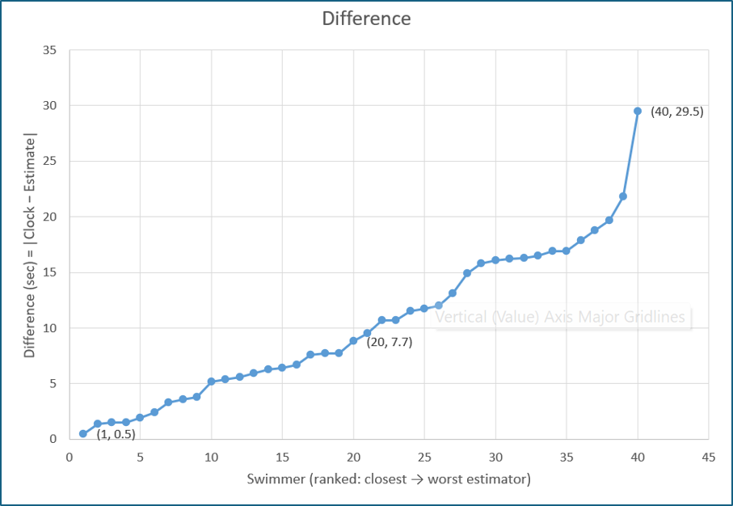

Forster Tuncurry Mudcrabs Winter Swimming Club
Since 1980, almost 50 years of winter swimming, friendship, and community.
Join us Sunday mornings at 9:00am through winter.
About the Mudcrabs
Established in 1980, originally known as The Cold Tooths, the Mudcrabs are a friendly, family-focused winter swimming club based at the iconic Forster Ocean Pool.
We welcome swimmers of all ages and abilities. Whether you are competitive, social, or just curious, you will find a relaxed and supportive group.
Many members have been with the club for decades, a reflection of the strong camaraderie and friendships built both in and out of the water.
First time swimmer?
Arrive at 8.30 for registration and a 9am start every Sunday from May through to September.
Bring swimmers, a towel, and goggles.
Our beautiful venue
We swim at the iconic Forster Ocean Baths, one of the best ocean pools on the NSW coast.

28 North Street, Forster NSW 2428
View on Google Maps Venue detailsSwim program and results
We now use our dedicated Mudcrabs swim program site for race schedules, handicap swim meets, and results.
It keeps everything in one place and up to date for members and visitors.
Visit the Swim Program SiteGallery
Approved club photos and videos can be added here over time so members, families, visitors, and supporters can see the spirit of the Mudcrabs.
2026-05-03: Check out one of the races with our President in lane 3 showing his commitment to the club.
2026-05-10: A close finish in a 30m race.
2026-05-26: Bull Ring clean-up at Forster Ocean Baths, helping ready our swim venue for the season.

Forster Ocean Baths cleaning schedule
The pool will be closed for the entire day on these dates below:
2026
- Monday 12 January
- Tuesday 27 January
- Tuesday 10 February
- Tuesday 24 February
- Monday 9 March (refresh only)
- Tuesday 24 March
- Thursday 9 April (refresh only)
- Thursday 23 April
- Tuesday 26 May
- Tuesday 23 June
- Thursday 23 July
- Friday 7 August

100m Most Close Boast
Today’s 100m "Most Close Boast" was attended by 40 swimmers. Estimates ranged from as close as 0.5 seconds to almost 30 seconds.
The mystery will remain as to who is the winner until the end-of-year awards ceremony.
In the meantime, see a graph of how well people do, and do not, estimate their swim times.
We hope you had a bit of fun in that race today!
Mudcrabs Leaderboard
Our animated leaderboard lets everyone follow the season as it unfolds. Watch swimmers move up and down the rankings each week as points are earned and the competition develops.
The leaderboard is updated throughout the season and provides an easy way to see how close the competition is becoming as we head towards the end-of-year awards.
Visit the Mudcrabs swim program site for the latest leaderboard and results.
For more photos, swim day moments, and club updates, check out our Facebook page.
View more photos on Facebook